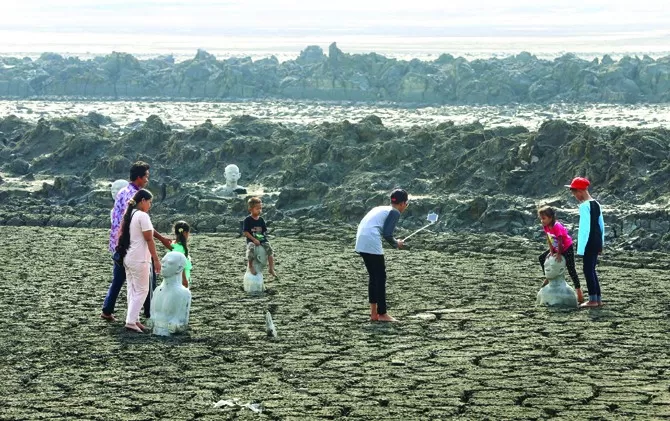

Selamat Datang di Kabupaten Sidoarjo

Kabupaten Sidoarjo adalah salah satu kabupaten di provinsi Jawa Timur, Indonesia. Terkenal dengan sebutan Kota Delta, Sidoarjo memiliki peran penting dalam sejarah, budaya, dan ekonomi provinsi Jawa Timur. Kota ini juga dikenal sebagai salah satu pusat industri dan perdagangan di Jawa Timur.
Sejarah Kabupaten Sidoarjo
Kabupaten Sidoarjo, yang terletak di Jawa Timur, memiliki sejarah panjang. Pada zaman dahulu, wilayah ini merupakan bagian dari Kerajaan Jenggala yang berdiri setelah pecahnya Kerajaan Kahuripan. Sidoarjo menjadi wilayah penting di era Hindia Belanda, terutama sebagai pusat pertanian dan perikanan.
Wisata di Kabupaten Sidoarjo
Sidoarjo menawarkan banyak destinasi wisata menarik seperti Lumpur Lapindo, Candi Pari, Museum Mpu Tantular, dan banyak lagi. Setiap tempat menawarkan sejarah dan pesona unik bagi wisatawan lokal maupun internasional.
Makanan Khas Sidoarjo
Kabupaten Sidoarjo juga dikenal dengan kekayaan kulinernya. Makanan khas seperti Otak-Otak Bandeng, Kerupuk Udang, dan Lontong Kupang adalah beberapa dari kuliner lezat yang bisa Anda nikmati di kota ini.
Kontak Kami
Untuk informasi lebih lanjut, silakan hubungi kami melalui:
Email: info@sidoarjo.go.id
Telepon: (031) 123-4567